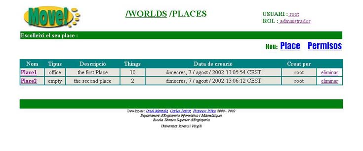
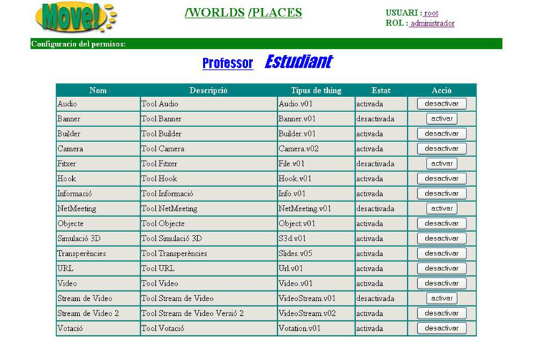

4.4 Definir permisos en un World
El primer que cal fer �s dir que entenem per Permisos. Doncs b�, definirem permisos que t� cada rol en un World
com a les tools que poden utilitzar tots els usuaris que pertanyen a aquest rol dins un determinat World.
Nom�s es podran definir permisos per als rols, Estudiant i Professor. El rol Administrador tindr� acc�s a totes les tools
en qualsevol dels Worlds.
Un cop dit aix� ja estem en disposici� de definir permisos en un World.
El primer que cal fer �s entrar en un World.

Una vegada dins el World observarem que en la pantalla on apareixen tots els Places que cont� aquest World, ha aparegut una nova opci�, .Si cliquem sobre aquesta opci� entrarem a la pantalla on podrem definir els permisos de cada rol sobre les Tools.

Observarem que apareix una taula amb totes les Tools que hi ha disponibles en el MOVE!, i a la part superior d'aquesta, els noms dels dos rols sobre els quals podem definir els permisos. El nom del rol que est� en cursiva �s al que pertany la informaci� actual de la taula.
Per a cada Tool tenim la seg�ent informaci�:
- Nom: nom de la Tool
- Descripci�: descripci� de la Tool
- Tipus de Thing:
- Estat: estat en qu� es troba actualment la Tool per aquest rol
- Acci�: Ens permet activar o desactivar la Tool per tal de que pugui ser utilitzada o no per aquest rol